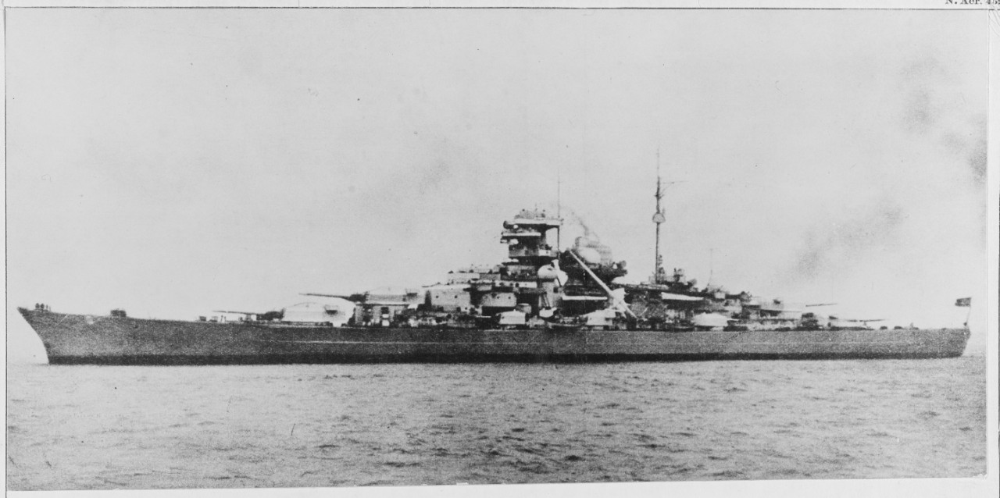

Bismarck
Acorazado alemán de la clase Bismarck, famoso por hundir al HMS Hood y por su persecución y destrucción en el Atlántico Norte en mayo de 1941.

Diseño y misión
Formaba con el Tirpitz una clase de acorazados alemanes de artillería pesada. Su misión atlántica buscaba amenazar el tráfico marítimo británico.
Operación Rheinübung
Navegó con el Prinz Eugen. Tras el combate del Estrecho de Dinamarca, los daños y la persecución británica condicionaron su regreso a puerto.
Destino final
El 27 de mayo de 1941 quedó fuera de combate y se hundió. Las fuentes discuten la contribución relativa de los daños enemigos y del autohundimiento.